המקצבים של העבודה עם AI
מתי אנשים פונים ל-Claude, מה הם מייצרים איתו, וכיצד הם תופסים את השפעת ה-AI על עבודתם.
לפני שנה, רוב השימוש ב-Claude התנהל כשיחה בין משתמש לעוזר. עם הצמיחה המהירה של Claude Code ושל Cowork, מפגשי Claude מורכבים כיום יותר ויותר ממשימות סוכניות ממושכות. תמלילי צ'אט כבר אינם משקפים במלואם את האופן שבו אנשים משתמשים בבינה מלאכותית, והשיטות שלנו לחקר ההשפעות הכלכליות של Claude נדרשו להסתגל.
כדי לעמוד בקצב, ערכנו כמה שינויים בצינור עיבוד הנתונים שלנו עבור המדד הכלכלי. בגרסה זו, אנו:
- דוגמים נתונים בקצב גבוה יותר, באופן שמאפשר לנו לבחון דפוסי שימוש עד לרמת השעה. מציגים מסווג חדש המתייג את הפלט של כל שיחה. משתפים נתונים מפורטים יותר, תוך הפרדה בין התוצאות של שיחות צ'אט ו-Cowork (יחד, "שיחות Claude") לבין 1P API, בצבירה חודשית. 1
אנו מתארים שינויים מתודולוגיים נוספים בנספח . יחד, שינויים אלה מספקים תמונה ברורה יותר של האופן שבו הבינה המלאכותית משקפת את החיים הכלכליים ומתפשטת לתוכם.
נוסף על כך, עד כה לא הייתה לנו נראות לגבי ההשפעה של Claude מחוץ למפגשי משתמשים. כיצד אנשים תופסים את השינוי שהבינה המלאכותית מחוללת בעבודתם, או בהזדמנויות העומדות לרשותם? האם השימוש שלהם בבינה מלאכותית מעצב את ציפיותיהם? בעולם אידיאלי, מה היו רוצים לקבל מבינה מלאכותית? אנו מדווחים על ממצאים ראשוניים מסקר המדד הכלכלי של Anthropic, שהושק באפריל 2026.
להלן תצוגה מקדימה של הממצאים העיקריים שלנו.
- בפרק 1 אנו מראים כיצד המקצבים של העולם החיצוני מעצבים את השימוש ב-Claude. בקשות הקשורות לעבודה פוחתות בסוף השבוע, אם כי באופן מתון יותר במקצועות בעלי השכר הגבוה ביותר; אנשים נוטים לבקש חדשות בבוקר, והבקשות לעצות שינה מגיעות לשיא בסביבות השעה 5 לפנות בוקר; בקשות הקשורות למסים מזנקות בסמוך למועדי ההגשה האחרונים.
- פרק 2 בוחן את התוצרים המוחשיים שאנשים מפיקים ממפגשי Claude שלהם. תוצרים אלה תלויים במידה רבה במוצר שבו הם משתמשים. לדוגמה, צ'אט ו-Cowork מספקים יותר הסברים מאשר Claude Code. גם אופי הפלט מעצב את האינטראקציות של אנשים עם Claude. בניית אתר אינטרנט מותירה הרבה יותר לשיקול דעתו של Claude מאשר תרגום מסמך, שבו התשובה נקבעת במידה רבה על פי הטקסט. אנו גם רואים שכוח חישוב רב יותר קשור לתוצרים בעלי ערך רב יותר; מספר האסימונים שפלט נתון צורך עולה בהתאם לערכה המשוער של העבודה.
- פרק 3 מציג את התוצאות הראשונות מסקר המדד הכלכלי של Anthropic, שאותו אנו מקשרים לנתוני השימוש ב-Claude באמצעות המערכת שלנו לשמירה על הפרטיות . הציפיות והחוויות משתנות באופן שיטתי בהתאם לאופן שבו אנשים משתמשים ב-Claude: אנשים שמשתמשים ב-Claude בצורה האוטומטית ביותר מצפים שהבינה המלאכותית תיקח על עצמה יותר ממשימותיהם בשנה הקרובה, אך הם גם האופטימיים ביותר באשר למשמעות הדבר לעבודתם, וצופים השפעות חיוביות על השכר, הביטחון התעסוקתי ותחושת המשמעות.
מקצבים
הטלמטריה החדשה שלנו, השומרת על הפרטיות ודוגמת ברציפות חלק מן השיחות מדי יום, מאפשרת לנו לחקור דפוסי שימוש יומיים ושעתיים, בניגוד למדגמים בני שבעת הימים שעליהם התבסס כל דוח קודם של המדד הכלכלי. ניתוחים אלה לוכדים את הגאות והשפל בדפוסי העבודה ברחבי העולם. 2
אנו מוצאים שהשימוש ב-Claude משקף את שבוע העבודה, בעוד שהודעות אישיות מזנקות בסוף השבוע. הנתונים השעתיים לוכדים דפוסים במהלך היום: אנשים מבקשים עצות שינה בתדירות הגבוהה ביותר בסביבות השעה 5 לפנות בוקר, ומתכונים בסביבות השעה 6 בערב. אנו רואים גם שהשימוש משקף תאריכים מרכזיים. לדוגמה, בקשות הקשורות למסים זינקו ממש לפני מועד ההגשה האחרון בארה"ב, ב-15 באפריל.
שבוע העבודה
שיעור שיחות הצ'אט ו-Cowork 3 המסווגות כשימוש אישי מזנק מכ-35% בימי חול לקצת פחות מ-50% בסופי שבוע במהלך תקופת המדגם (תרשים 1.1). מחוץ לשבוע העבודה, שיחות המשתמשים עוברות מהתכתבויות עסקיות, תוכן שיווקי ומצגות לתמיכה רגשית, שאלות רפואיות וייעוץ השקעות. שינוי זה הוא הגדול ביותר במדינות בעלות הכנסה גבוהה.
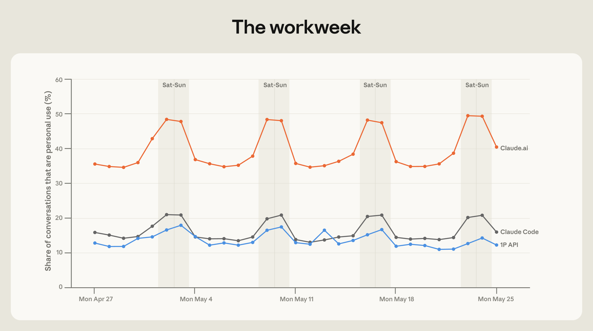
דפוס דומה קיים בתעבורת Claude Code ובתעבורת 1P API (כלומר, תעבורת API המנותבת ישירות דרך Anthropic), אף שבשתיהן שיעורי הבסיס של שימוש אישי נמוכים יותר. 4
אשכולות בקשות 5 מאפשרים לנו לרדת לרמת פירוט נוספת ולראות אילו משימות ספציפיות ב-Claude Code משתנות במידה הרבה ביותר בין ימי חול לסופי שבוע. בסופי שבוע, אשכולות השימוש ב-Claude Code שרושמים את הירידות הגדולות ביותר כוללים ארכיטקטורת צד שרת, איתור באגים ב-API ואחסון נתונים. האשכולות שרושמים את העליות הגדולות ביותר כוללים תכנון סוכני בינה מלאכותית, מסחר כמותי ומשחקים.
סופי השבוע עשויים גם לפנות לאנשים מרחב לקידום מיזמים חדשים. בכלל המדינות, שיחות הקשורות להקמת עסק מגיעות לשיא בשבת וביום ראשון. עם זאת, פעילויות להגשת מועמדות למשרות פוחתות בסוף השבוע, יחד עם משימות אחרות הקשורות לעבודה. 6
מקצבים יומיים
משעה לשעה, השימוש ב-Claude משקף את מקצבי חיי היומיום. תרשים 1.2 מציג את התדירות השעתית של אשכולות בקשות שונים ביחס לממוצע הכולל שלהם בתעבורה העולמית. 7
אנשים מבקשים חדשות בשעה 7 בבוקר לפי הזמן המקומי. התכתבויות עסקיות (למשל, ניסוח הודעות דוא"ל) מתחקות אחר מהלכו של יום העבודה, עם שיא קל בשעות 10–11 בבוקר. אחת העליות החדות ביותר היא בבקשות למתכונים, שתדירותן בשעה 6 בערב גבוהה פי 2.3 מהממוצע. בקשות להמלצות מדיה מרוכזות בעיקר בשעות הערב, ואילו אנשים מבקשים עצות שינה בשעות הספורות שלפני עלות השחר.
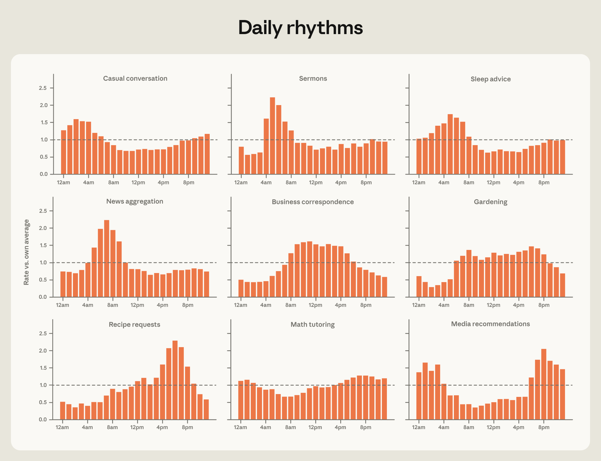
בלילות ובסופי שבוע, כאשר אנשים אכן פונים ל-Claude לצורכי עבודה, המשימות נוטות יותר למקצועות בעלי שכר גבוה (תרשים 1.3). אף שאיננו יכולים לזהות באופן חד-משמעי את משרותיהם של מגישי הבקשות הללו, הדבר עשוי לשקף את העובדה שאנשים במקצועות בעלי שכר גבוה יותר, כגון מנהלי שיווק או מתכנתי מחשבים, נוטים יותר לעבוד מחוץ לשעות העבודה המקובלות. לעומת זאת, חלקן מתוך כלל השיחות של משימות הקשורות למשרות בשני הרבעונים התחתונים, כגון טלמרקטינג ועבודה פקידותית, מצטמצם. דפוס זה אינו נובע אך ורק ממשימות מחשוב ומתמטיקה: כאשר הסרנו מקצועות אלה מן הניתוח במסגרת בדיקת עמידות, המשימות מן הרבעונים הגבוהים עדיין עלו בלילות ובסופי שבוע.
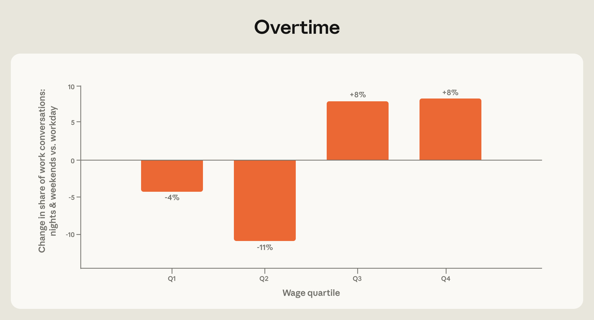
יום המס
תקופת המדגם של דוח זה כוללת מועדים אחרונים להגשת דוחות מס עבור אנשים בארצות הברית. תרשים 1.4 מציג זינוק גדול בשיעור השיחות הקשורות למסים בסמוך למועד האחרון. ב-14 באפריל, אשכולות הקשורים למסים היו נפוצים פי שמונה מאשר ביום ממוצע בחודש מאי, ונותרו ברמה דומה ב-15 באפריל. ב-16 באפריל הם צנחו בחדות.
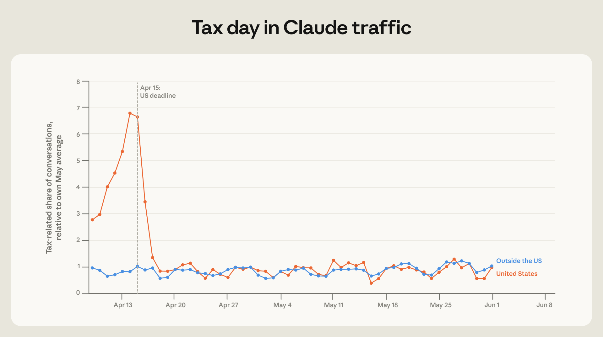
תוצרים
בפרק זה אנו מסווגים כל שיחה בצ׳אט וב-Cowork (להלן ״שיחות Claude״) 8 לפי התוצר שלה, שאותו אנו ממיינים לאחת מיותר מ-30 קטגוריות. אנו מכנים ״תוצר״ את הפלט העיקרי ש-Claude מפיק בשיחה, מסמך, הסבר, קטע קוד, מאמר אקדמי וכן הלאה, בין שהוא מוצג בחלון צ׳אט ובין שהוא מוצג כמסמך נפרד. הרשימה המלאה של התוצרים מופיעה בנספח .
המסווג שלנו זיהה כי ב-93% משיחות Claude מופק תוצר (איור 2.1). 9 התוצרים הנפוצים ביותר הם הסברים (17% מהשיחות), מסמכים ודוחות (15%) והדרכה (11%). פלטים שיחתיים (כגון הסברים או הדרכה) ותוצרים כתובים (כגון מסמכים או מצגות) מהווים כל אחד כשליש מהשיחות; קוד ועבודה טכנית (כגון יישומים או סקריפטים) מהווים כשישית.
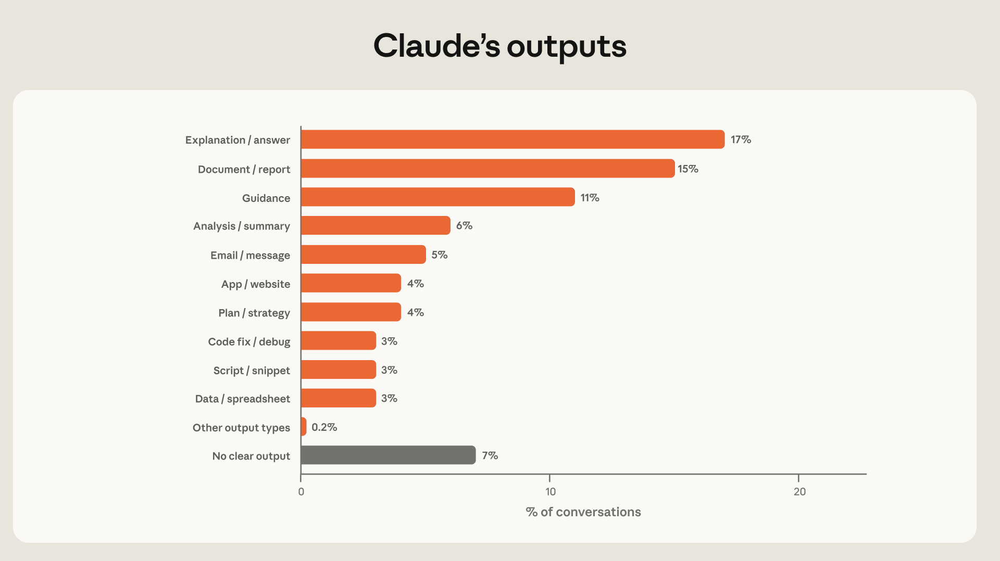
זהותו של פלט אינה מלמדת מהי מטרתו: אותו תוצר עשוי להיות תוצר לעבודה או פרויקט אישי. כעת נבחן את החלוקה הזאת.
למה משמש כל תוצר?
המדד הכלכלי שלנו מינואר הציג רכיב בסיסי המסווג כל שיחה כשיחה לצורכי עבודה, לצרכים אישיים או ללימודים. כאן אנו מחילים את החלוקה הזאת על התוצרים המופקים בשיחות Claude (איור 2.2).
קטגוריות מסוימות של תוצרים הן כמעט תמיד אישיות. יותר מ-80% מהשיחות שהפיקו כתיבה יצירתית, הדרכה ומתכונים סווגו כאישיות. בתוך כל קטגוריה, השימושים האישיים והשימושים הקשורים לעבודה עשויים להיראות שונים למדי. בכתיבה יצירתית אישית, למשל, שולטים סיפורי מעריצים, בניית עולמות ושירה; 13% הקשורים לעבודה הם בעיקר תסריטים לסרטונים קצרים, תסריטאות ונאומים. הקטגוריות שסביר ביותר כי יהיו קשורות לעבודה כוללות יצירת תוכן שיווקי (80%), יצירת בלוגים או מאמרים (81%) וכתיבת שאילתות למסדי נתונים (82%).
פלטים רבים משמשים בסבירות דומה לצרכים אישיים ולצורכי עבודה, ובהם יצירת תוכניות או אסטרטגיות (44% קשורים לעבודה, 49% אישיים) או תרגום (42% עבודה, 44% אישי). לדוגמה, הסוגים הנפוצים ביותר של תוצרי תכנון אישיים כוללים מסלולי טיול ותוכניות אימונים, ואילו תוכניות הקשורות לעבודה נוגעות לרוב לאסטרטגיות יזמיות או לאסטרטגיות תוכן.
לבסוף, תוצרים האופייניים ללימודים כוללים יצירת מאמרים ותזות אקדמיים, חומרי לימוד ושאילתות הקשורות למתמטיקה, אף ששיעור לא מבוטל מכל אחד מהם נכלל גם בקטגוריות העבודה וגם בקטגוריות האישיות.
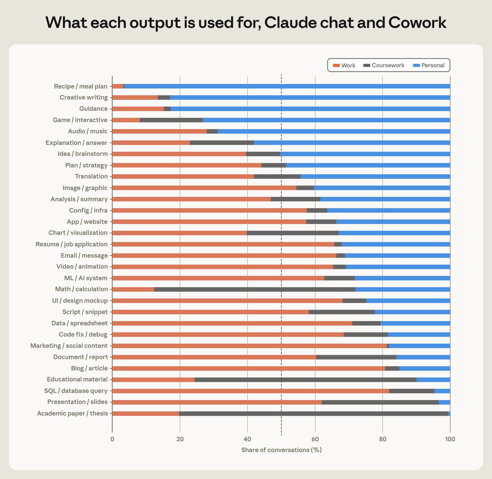
אפשר גם להפוך את השאלה. במקום לשאול למה משמש כל פלט, אפשר לשאול אילו סוגי תוצרים נוטות להפיק שיחות לצורכי עבודה, לצרכים אישיים וללימודים. שיחות עבודה מפיקות לרוב מסמכים ודוחות (20%), ואחריהם הסברים (9%), טיוטות דוא״ל (7%), וניתוחים וסיכומים (6%). שיחות לימודים נראות דומות באופן כללי, וגם בהן מסמכים ודוחות מובילים (21%), ומיד אחריהם הסברים (20%), חומרי לימוד (11%) ומאמרים אקדמיים (6%). לעומת זאת, וכצפוי, רק 6% מהשיחות האישיות מפיקות מסמך. תחת זאת, התוצאות הנפוצות ביותר הן הסברים (25%) והמלצות (22%).
העלות תואמת את ערך העבודה
הפקת הפלטים האלה דורשת משאבי חישוב, ואנו מוצאים שהיקף החישוב נוטה לגדול בהתאם לערך העבודה. אנו מודדים את עלויות החישוב של כל שיחה בטוקנים, כמות הטקסט שעובד והופק, לרבות החשיבה הפנימית של Claude, ומשווים בין מקצועות באמצעות מיפוי המשימה שסווגה בכל שיחה למקצוע שבמסגרתו היא מתבצעת בדרך כלל. לאורך סעיף זה אנו מגבילים את הניתוח לשיחות הקשורות לעבודה.
החלונית השמאלית באיור 2.3 מציגה קשר חיובי בין מספר הטוקנים החציוני ברמת השיחה לבין השכר החציוני במקצוע שאליו מופתה השיחה. 10 לדוגמה, מנהלי שיווק משתכרים בערך פי שניים מעורכים (80 דולר לעומת 37 דולר לשעה), ושיחות הממופות למשימות שלהם צורכות בערך פי 2.5 טוקנים. יש להודות שהקשר רועש, ויש חריגים בולטים. רוקחים, למשל, משתכרים כמעט פי שלושה מעוזרים סטטיסטיים (68 דולר לעומת 24 דולר לשעה), ובכל זאת שיחות שמופו למשימות של רוקחים משתמשות רק בכאחד חלקי עשרים ממספר הטוקנים.
![איור 2.3: שיחות במקצועות בעלי שכר גבוה יותר צורכות יותר טוקנים החלונית השמאלית: הקשר בין השכר החציוני במקצוע נתון לבין מספר הטוקנים הטיפוסי (ממוצע גאומטרי) בשיחות שסווגו לאחת המשימות השייכות לאותו מקצוע, לאחר נרמול לפי הממוצע הכולל. שני המשתנים מוצגים בסולם לוגריתמי. החלונית הימנית: התפלגות הטוקנים ששימשו להפקת תוצרים נתונים. הקו השחור מציין את החציון, התיבה מייצגת את p25 ואת p75, והמחושים מייצגים את p10 ואת p90. כל המספרים מנורמלים לפי המספר החציוני הכולל של טוקנים ומוצגים בסולם לוגריתמי. הנתונים בשתי החלוניות מוגבלים לצ׳אט ול-Cowork ולשיחות שסווגו כקשורות לעבודה. ספירות הטוקנים אינן מותאמות לפי המודל ששירת את השיחה.](images/figure-07.png)
הטוקנים הנצרכים להפקת סוגים שונים של תוצרים מספרים סיפור דומה. פלטים מורכבים ובעלי ערך רב יותר נוטים לצרוך הרבה יותר טוקנים מפלטים פשוטים יותר. לדוגמה, שיחות על בניית יישומים משתמשות ביותר מפי שלושה ממספר הטוקנים בשיחה החציונית. בקצה האחר של הספקטרום, הסבר טיפוסי משתמש בכחמישית ממספר הטוקנים בשיחה החציונית. כ-44% ממדרג השכר בצריכת טוקנים מוסבר בתמהיל הפלטים: במקצועות בעלי שכר גבוה יותר קיימת סבירות גבוהה יותר להפיק תוצרים עתירי חישוב.
מדוע יש לכך חשיבות כלכלית? בשיחות שמופו למקצועות בעלי שכר גבוה יותר, Claude מפיק יותר (פי 1.34 פלט בכל תור), בעוד המשתמשים מעורבים יותר (פי 1.53 תורים) ומפעילים חשיבה מורחבת בתדירות גבוהה יותר (34% מהשיחות לעומת 31%; טבלה 2.4). הנקודה המכרעת היא שהדברים נעים יחד: הפקה רבה יותר מצד Claude אינה משמעה הפקה מועטה יותר מצד המשתמש. אם האדם נותר מעורב במשימות בעלות הערך הגבוה ביותר, הדפוס נראה כמחזק עבודה יותר מאשר כדוחק עבודה. הוא גם מראה שבמידה מסוימת, פלטים בעלי ערך רב יותר עולים יותר. הסעיף הבא בוחן איזה חלק מקבלת ההחלטות בכל שיחה מועבר ל-Claude.
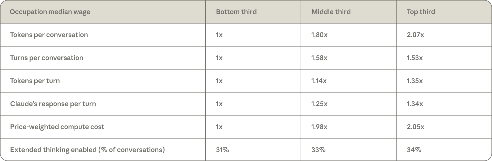
כמה אוטונומיה יש ל-Claude להחליט בעצמו?
אנו מודדים זאת בסולם של 1 עד 5, מ״ללא״ ועד ״קיצונית״. משימות שקל לתאר או להגדיר כרוכות באוטונומיה מועטה: הפלטים בעלי האוטונומיה הנמוכה ביותר הם מתמטיקה או חישובים, תרגומים ושאלות ותשובות. משימות בעלות אוטונומיה גבוהה הן משימות הדורשות בחירה מתוך אפשרויות רבות, למשל יצירת יישומים ואתרי אינטרנט, משחקים או מצגות. עבודה מסוג זה, הדורשת שיקול דעת מתמשך, הייתה מאז ומתמיד קשה לאוטומציה. באמצעות השוואת רמת האוטונומיה בצ׳אט של Claude וב-Cowork לזו שב-Claude Code, אנו מראים שמצב זה מתחיל להשתנות.
כמעט בכל סוגי הפלטים (26 מתוך 31 הפלטים המוצגים), רמת האוטונומיה של הבינה המלאכותית גבוהה יותר ב-Claude Code מאשר בצ׳אט או ב-Cowork. 11 לדוגמה, שיחות המפיקות סקריפטים וקטעי קוד כרוכות באוטונומיה גבוהה ב-0.53 נקודות (בממוצע, בסולם של 1 עד 5) כאשר הם נוצרים באמצעות Claude Code, בהשוואה לשיחות המפיקות את אותו פלט בצ׳אט או ב-Cowork. בכלל השיחות, ההפרש הממוצע באוטונומיה הוא 0.37 נקודות, ויש לו שני מקורות עיקריים. 12
כשני שלישים מההפרש מוסברים בכך שאותן משימות מבוצעות ב-Claude Code תוך האצלה רבה יותר. פוסטים בבלוגים ומאמרים ממחישים זאת: הבקשות והמשימות שבבסיסם דומות בשני הממשקים, אך האופן שבו אנשים עובדים עם Claude שונה מאוד. שיחת הצ׳אט או Cowork החציונית המפיקה פוסט לבלוג או מאמר כוללת 13 סבבים של חילופי דברים, ואילו הפעלת Claude Code החציונית המפיקה בלוג כוללת הנחיה אחת בלבד מצד אדם. השליש הנותר משקף את התמהיל השונה של סוגי פלט בשני הממשקים.
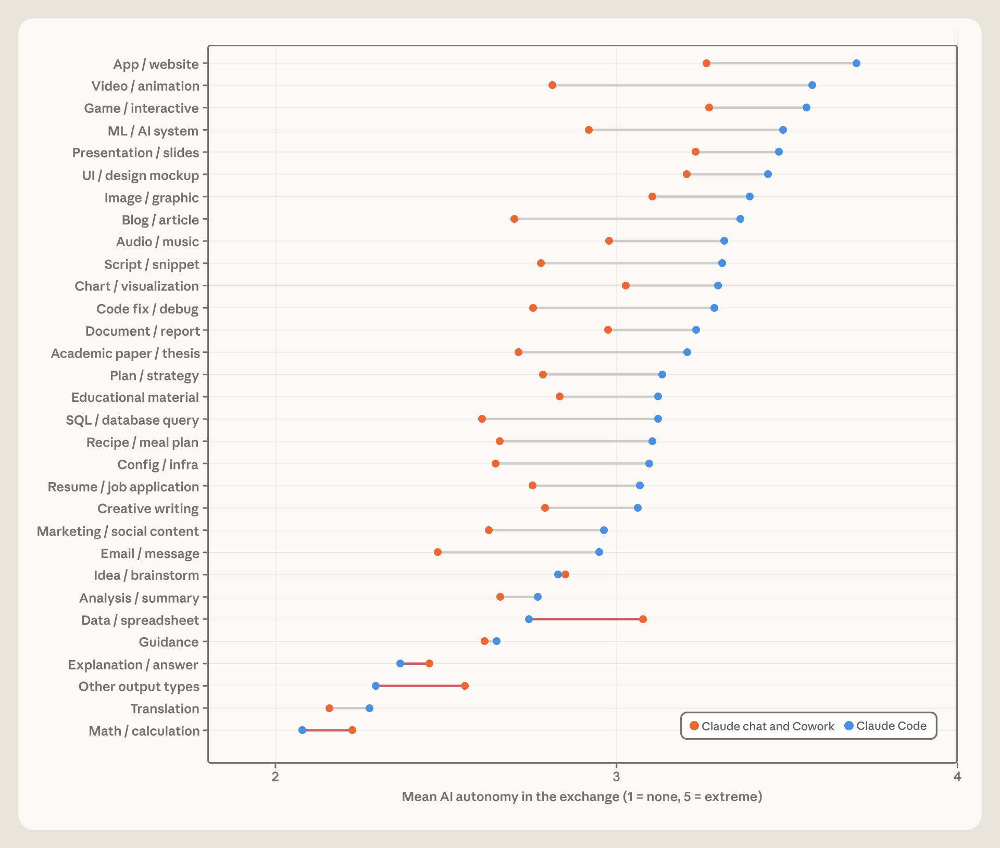
אפשר לחשוד שההבדל הזה פשוט משקף את בחירת המודל. הפעלות Claude Code פועלות על המודלים בעלי היכולת הגבוהה ביותר בתדירות גבוהה בהרבה (54% מקבלות שירות מ-Opus, לעומת 10% משיחות הצ׳אט ו-Cowork). עם זאת, הפער נותר בעינו כאשר אנו משווים שיחות שקיבלו שירות מאותו מודל. לדוגמה, בקרב שיחות המשתמשות ב-Sonnet, הפעלות Claude Code עדיין מציגות אוטונומיה גבוהה ב-0.26 נקודות, דבר המצביע על כך שסביר כי המוצר שבו נעשה שימוש חשוב יותר מהמודל שבבסיסו.
במבט רחב יותר, מעבר להשוואה בין הממשקים, סוגי הפלט שבהם המשתמשים מאצילים את המרב הם גם אלה שצורכים את מרב משאבי החישוב: כשמשווים בין תוצרים, האוטונומיה הממוצעת והשימוש החציוני בטוקנים עולים יחד (r = 0.68 בצ׳אט וב-Cowork; איור A.2 בנספח).
Claude משיב ברמה גבוהה מזו שבה נשאל
לכל שיחה, מסווג מעריך שתי רמות קריאה, אחת להנחיית המשתמש ואחת לתשובת Claude, המבוטאות במספר שנות הלימוד הנחוצות להבנת הטקסט. 13 אנו מוצאים שרמת הקריאה משתנה במידה רבה בהתאם לסוג התוצר. שאילתה ממוצעת המובילה למאמר אקדמי תדרוש יותר מ-16 שנות לימוד, בקירוב רמה המקבילה לתואר ראשון, ו-15% מהשיחות האלה הן ברמת דוקטורט ומעלה (20 שנות לימוד או יותר). בקצה האחר של הספקטרום נמצאות שיחות המובילות למתכונים או להדרכה, שבהן נדרשות פחות מ-10 שנות לימוד להבנת ההנחיה.
באופן כללי, לסוגי תוצרים שפלטיהם ברמת קריאה גבוהה יותר יש גם הנחיות ברמת קריאה גבוהה יותר (מתאם של 0.87 בין השיחות). עם זאת, אנו מבחינים גם שכמעט בכל קטגוריה, הפלט של Claude הוא ברמת הבנה גבוהה יותר מההנחיה, בהפרש של כשנת לימוד אחת בממוצע. הפער הוא הרחב ביותר במקרים שבהם משתמשים מתארים דבר מה שיש לבנות, כגון תמונות וגרפיקה (2.6+ שנים), משחקים (1.9+) ויישומים ואתרי אינטרנט (1.7+). ייתכן שחלק מהפער נובע פשוט ממשלב לשוני; ההנחיות לרוב תמציתיות ולא רשמיות, ואילו Claude נוטה להשיב בפרוזה מלוטשת. עם זאת, הפער קרוב לאפס בכתיבה המיועדת לקהל (בלוגים 0.1−, מאמרים אקדמיים 0.0+, דוא״ל 0.3+), ייתכן משום שההנחיות כוללות בדרך כלל טיוטת ניסוח או חומר מקור הכתובים באותו משלב של הפלט המיועד.
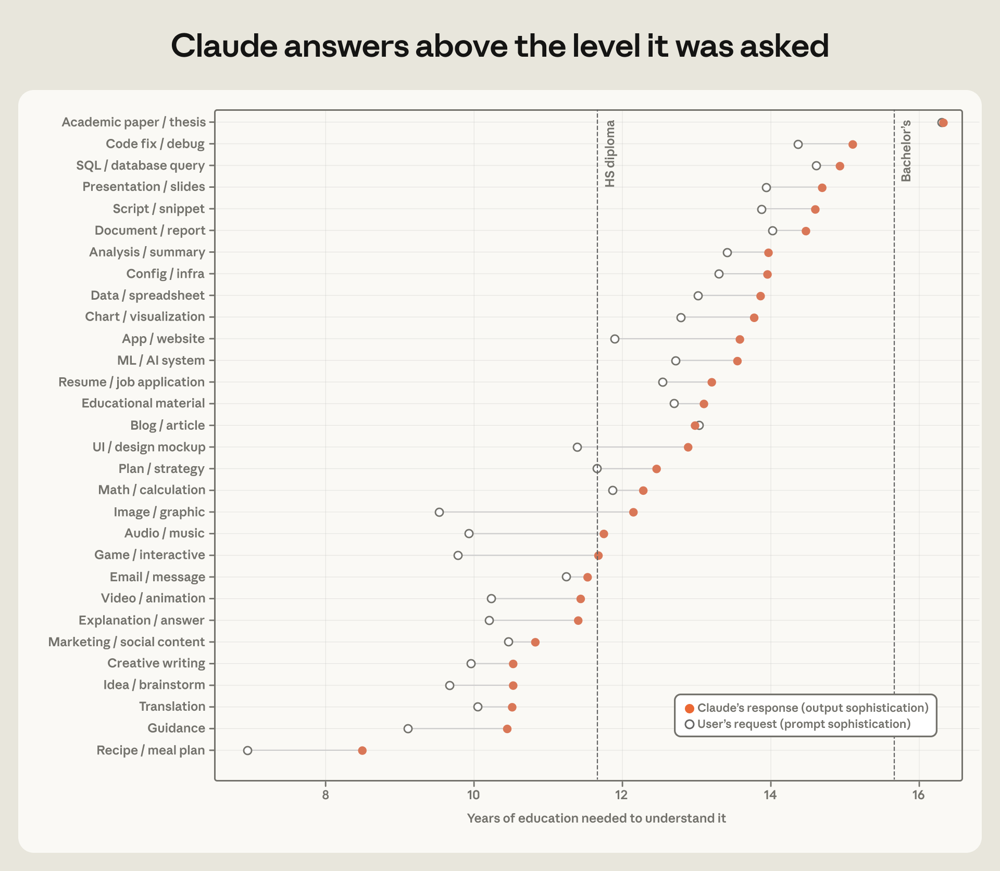
תפיסות
שני הפרקים הראשונים מראים כיצד אנשים משתמשים ב-Claude, אך אינם מספקים תובנות רבות באשר לאופן שבו אנשים חווים בינה מלאכותית בעבודה: כיצד הם מצפים שהמשרות ומקומות העבודה שלהם ישתנו, מה הם מרגישים לגבי השפעתה הנוכחית והאפשרית של הבינה המלאכותית, ולמה הם מקווים מן הטכנולוגיה. הראיונות שלנו עם 81,000 משתמשי Claude, שנערכו בדצמבר 2025 באמצעות Anthropic Interviewer, הציגו תמונה ברורה: המשיבים דיווחו על עליות גדולות בפריון, אך גם הביעו חשש מפני דחיקה ממקומות עבודה. חששות אלה התרכזו בקרב עובדים בראשית דרכם ובמשלחי יד שבהם אנו רואים את Claude מבצע את היקף העבודה הגדול ביותר. 14
באפריל 2026 השקנו את סקר המדד הכלכלי של Anthropic כדי להמשיך ולפתח עבודה זו. הסקר מאפשר לנו לשאול אנשים ישירות על חווייתם עם בינה מלאכותית ועבודה, ולבחון כיצד התשובות משתנות בהתאם לשימוש ב-Claude. אנו מקשרים בין תשובות לסקר לבין נתוני שימוש מאמצע מאי ועד תחילת יוני, בשיטות השומרות על הפרטיות. כדי לאפיין את דפוסי השימוש של כל משיב, אנו דוגמים באקראי עד 20 מפגשים לאדם בחלון זמן זה (ב-Claude.ai, ב-Cowork וב-Claude Code, כך שתמהיל המפגשים משקף את השימוש הטיפוסי של כל אדם בממשקים השונים). אנו מוציאים מן הניתוח משיבים שביצעו פחות מחמישה מפגשים, כדי לצמצם רעש דגימה. המדגם המקושר הסופי שלנו כולל כ-9,700 משיבים לסקר.
אנו מוצאים כי רוב המשיבים מצפים להתקדמות משמעותית של הבינה המלאכותית במהלך השנה הקרובה. אף שתפיסתם של אנשים את יכולות הבינה המלאכותית תלויה בניסיונם, במקום מגוריהם ובמידת החשיפה של עבודתם לבינה מלאכותית, ציפיותיהם באשר לקצב ההתקדמות העתידית אחידות להפליא. הדבר עולה בקנה אחד עם "גאות מרימה", שבה יכולות הבינה המלאכותית משתפרות באופן נרחב.
הדעות באשר למשמעותה של התקדמות זו לקריירות שלהם עצמם אחידות פחות. עובדים בראשית דרכם מדווחים כי בינה מלאכותית יכולה לבצע את השיעור הגבוה ביותר מעבודתם, ומביעים את החשש הרב ביותר מאובדן משרות. עם זאת, בניגוד לחשש נפוץ, האנשים שמעבירים ל-Claude את היקף המשימות הגדול ביותר הם האופטימיים ביותר באשר לתוצאותיהם העתידיות בשוק העבודה, וחשים שערך כישוריהם עולה. ולמרות קרבתם לחזית הבינה המלאכותית, ואולי בגללה, תקוותיו של המשיב הממוצע לעשור הקרוב מתמקדות לא בהחלפה אלא בשיתוף פעולה. הם מקווים שבינה מלאכותית תוכל לשמר עבודה בעלת משמעות ולהפוך את העבודה השוחקת לאוטומטית, ושהתועלות ממנה יחולקו באופן נרחב.
מי השיב לסקר המדד הכלכלי
סקר המדד הכלכלי אינו מייצג את כלל האוכלוסייה. אנו פונים למדגם אקראי של משתמשי Claude, ייתכן שקיימת הטיית בחירה בשאלה מי משלים את הסקר, ואנו מסננים מן הניתוח משתמשים שאינם משתמשים תכופים. איור 3.1 מציג את תמהיל משלחי היד של המשיבים לסקר (בכתום) לצד התעסוקה בארה"ב (באפור). משלחי יד בתחומי המחשבים והמתמטיקה זוכים לייצוג היתר הגדול ביותר, ומהווים כ-30% מן המשיבים לסקר, שיעור הדומה לחלקם בשימוש ב-Claude, אך גבוה בהרבה מחלקם בתעסוקה בארה"ב, העומד על 4%. גם ניהול, עם 23% מן המשיבים, 15 זוכה לייצוג יתר גדול ביחס לחלקו בתעסוקה, העומד על 7%, אף שהוא מהווה רק 4% מן המפגשים. פער זה עולה בקנה אחד עם האפשרות שמנהלים משתמשים ב-Claude למשימות שאינן הניהול עצמו: בסקר, שיקול דעת וניהול מוזכרים בידי משיבים רבים (במיוחד בעלי ניסיון רב יותר) כיכולות שחסרות לבינה מלאכותית. קטגוריות של משלחי יד פיזיים, כגון הובלה ושינוע חומרים, הכנת מזון והגשתו, ובנייה וכרייה, זוכות כולן לייצוג חסר בסקר, כפי שהן זוכות לייצוג חסר גם במפגשי Claude.
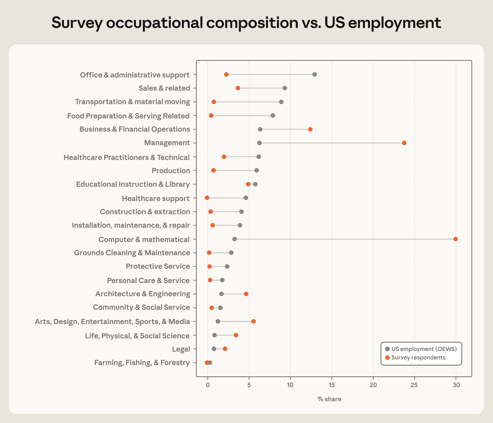
בינה מלאכותית ומשימות עבודה
מחקר על השפעות הבינה המלאכותית מתמקד לעיתים קרובות בחשיפה תעסוקתית, כלומר בשיעור המשימות במסגרת עבודה מסוימת שניתן לבצע באמצעות בינה מלאכותית. בעבודה קודמת בנינו מדד לחשיפה נצפית, הלוכד את שיעור המשימות התעסוקתיות שאנו כבר רואים כי הן מבוצעות באמצעות Claude. השווינו אותו למדד נפוץ של חשיפה תאורטית, כלומר שיעור המשימות התעסוקתיות שמודל שפה גדול יכול, מבחינה תאורטית, לבצע.
דרך נוספת להבין חשיפה תעסוקתית היא פשוט לשאול אנשים איזה חלק מעבודתם מסוגלת הבינה המלאכותית לבצע. שאלנו את המשיבים איזה שיעור ממשימות עבודתם יכולה הבינה המלאכותית לבצע כיום לגמרי בכוחות עצמה (להלן "חשיפה מדווחת"), ואיזה שיעור הם מצפים שהיא תוכל לבצע בעוד 12 חודשים ("חשיפה צפויה"), עם אפשרות לבחור באחד מחמישה טווחים, מ"כמעט אף משימה" ועד "כמעט כל המשימות". קרוב ל-6 מכל 10 משיבים בחרו לשנה הבאה טווח גבוה מזה שבחרו להיום. יותר משליש מצפים שבשנה הבאה בינה מלאכותית תוכל לבצע את רוב משימות עבודתם או כמעט את כולן (איור 3.2).
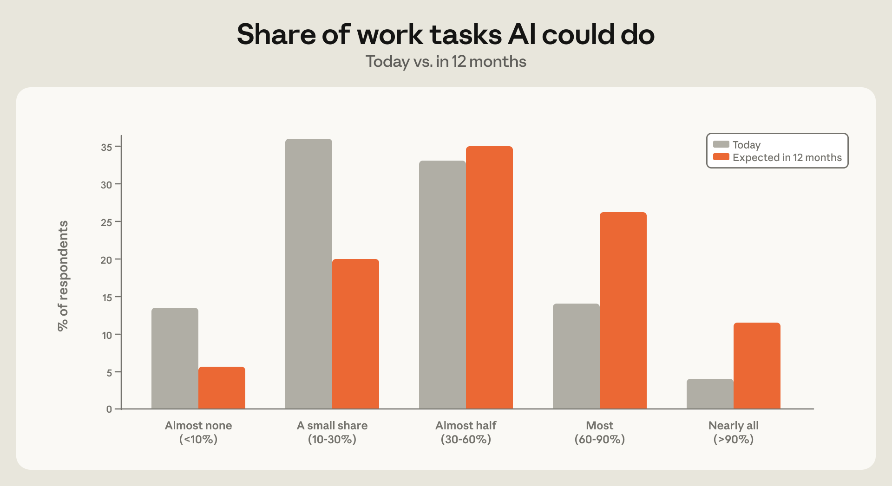
איור 3.3 משווה בין החשיפה המדווחת והצפויה לבין החשיפה הנצפית והתאורטית. אנו שואלים אם הדברים שאנשים מדווחים ומצפים שבינה מלאכותית תוכל לבצע תואמים למדדי החשיפה הנצפית והתאורטית במשלחי יד שונים, ואם משיבים שמשלחי היד שלהם מקבלים ציון גבוה יותר בחשיפה הנצפית או התאורטית מצפים להתקדמות מהירה יותר במהלך השנה הקרובה. התשובה לשאלה הראשונה היא כן: החשיפה המדווחת (נקודות אפורות) מתואמת באופן חיובי הן עם החשיפה הנצפית והן עם החשיפה התאורטית. התשובה לשאלה השנייה היא לא: קווי ההתאמה המיטבית לחשיפה המדווחת ולחשיפה הצפויה בעוד 12 חודשים (נקודות כתומות) מקבילים למעשה. משמעות הדבר היא שאנשים בתפקידים בעלי חשיפה נצפית או תאורטית גבוהה מצפים במהלך השנה הקרובה לעלייה דומה בשיעור משימות עבודתם שבינה מלאכותית יכולה לבצע, בהשוואה לאנשים בתפקידים בעלי חשיפה נצפית ותאורטית נמוכה יותר. 17 במילים אחרות, מהנדס תוכנה ומנהל בנייה צופים תוספת התקדמות דומה במקצוע שלהם.
ראוי לציין גם שהחשיפה המדווחת גבוהה באופן שיטתי מן החשיפה הנצפית. הסבר אפשרי לכך הוא שלא כל אדם מבצע כל משימה הקיימת במשלח יד מסוים, ושהסקר שלנו מגיע בשיעור לא פרופורציונלי לאנשים המשתמשים יותר בבינה מלאכותית. 18 באופן דומה, מאחר שהחשיפה התאורטית היא חסם עליון למה שאפשרי ולא מדד לשימוש הנוכחי, החשיפה התאורטית מעריכה באופן שיטתי את החשיפה המדווחת ביתר.
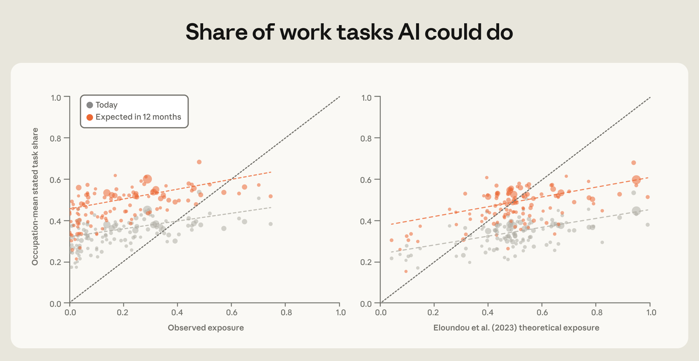
אנו בוחנים גם כיצד תפיסות של יכולות הבינה המלאכותית בהווה ובעתיד קשורות למאפייני המשיבים ולדפוסי השימוש שלהם. התרשים השמאלי באיור 3.4 מראה שתפיסות של יכולות הבינה המלאכותית מתואמות באופן שלילי עם התמ"ג של המדינה: 19 השיעור הממוצע של המשימות שלדברי אנשים בינה מלאכותית יכולה לבצע עבורם כעת נמוך בכ-10 נקודות אחוז במדינות בעלות הכנסה גבוהה. דפוס זה עולה בקנה אחד עם האפשרות שבינה מלאכותית מחליפה חלק גדול יותר מן המשימות שעובדים במדינות בעלות הכנסה נמוכה מבצעים מדי יום, גם אם מדדי חשיפה ברמת משלח היד, שנוטים להיות גבוהים יותר בכלכלות מתקדמות, מצביעים על ההפך. ואכן, קרן המטבע הבין-לאומית ציינה כי אף שכלכלות מתקדמות ניצבות ככלל בפני חשיפה רחבה יותר לבינה מלאכותית, לעובדים במדינות בעלות הכנסה נמוכה עשויה להיות גישה מצומצמת יותר לכישורים ולתשתיות המשלימים, שמאפשרים לבינה מלאכותית להעצים את עבודתם במקום להחליפה. בעבודה קודמת תיעדנו כי כלכלות בעלות הכנסה נמוכה נוטות להשתמש ב-Claude בדרכים אוטומטיות יותר, גם לאחר התאמה להבדלים בתמהיל המשימות.
התרשים האמצעי מראה שגם החשיפה המדווחת והצפויה מתואמות באופן שלילי עם שנות ניסיון בעבודה. 20 אנשים בעלי 15 שנות ניסיון לפחות מעריכים את שיעור המשימות שבינה מלאכותית יכולה לבצע בכ-10 נקודות אחוז פחות מאנשים הנמצאים בשנת עבודתם הראשונה. אנו מוצאים ראיות לכך שהסיבה האפשרית היא שעובדים מנוסים צברו מומחיות סמויה או תלוית הקשר שקשה לבינה מלאכותית לחקות. בשאלות המשך שאלנו אנשים אילו משימות, לדעתם, בינה מלאכותית לעולם לא תוכל לבצע ומדוע. התשובות הנפוצות ביותר הדגישו כי לבינה מלאכותית חסרים שיקול הדעת, המודעות להקשר וההיגיון המצבי שעבודתם דורשת. המשיבים, ובשיעור לא פרופורציונלי אלה מהם שצברו לפחות 15 שנות ניסיון, הצביעו גם על הממדים של יחסים בין-אישיים בעבודתם, בניית אמון וניהול אנשים, כדברים שבינה מלאכותית אינה יכולה לשחזר.
בדומה לחשיפה התעסוקתית לבינה מלאכותית, אנו מוצאים שתפיסות באשר לשיפורים עתידיים ביכולות הבינה המלאכותית אינן מתואמות למעשה עם התמ"ג לנפש ועם שנות הניסיון. שיעור המשימות שבינה מלאכותית צפויה להיות מסוגלת לבצע בעוד 12 חודשים גבוה באופן אחיד מן התפיסות באשר ליכולותיה כיום.
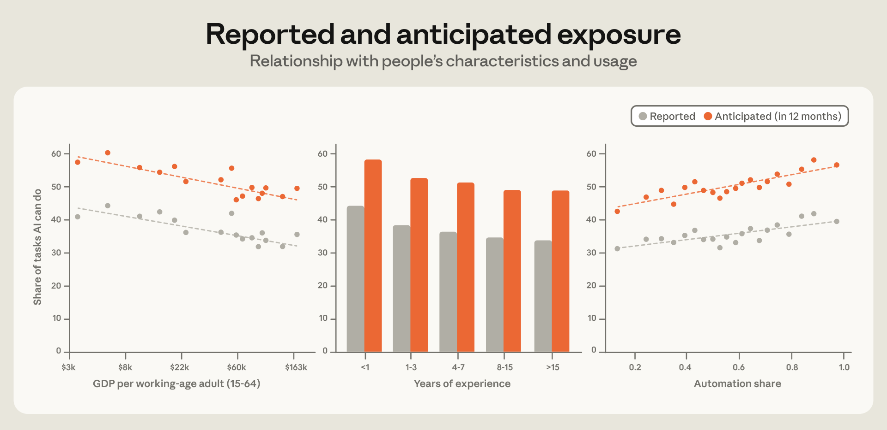
לאחר מכן אנו בוחנים את הקשר בין האופן שבו אנשים מקיימים אינטראקציה עם Claude לבין תפיסותיהם הנוכחיות את יכולותיו של Claude. בדומה לדוחות קודמים, אנו מבחינים בין אופני "אוטומציה" ו"העצמה" של שיתוף פעולה עם Claude. אנו מזהים שיחות כאוטומטיות כאשר Claude מתבקש להשלים משימה כמעט ללא קלט מן המשתמש, או ללא קלט כלל. במונחים קונקרטיים, שיעור האוטומציה הוא שיעור השיחות שדפוסן הוא הנחיה ישירה ("תרגם את המסמך הזה") או לולאת משוב ("ערוך את הודעת הדוא"ל הזאת...הפוך אותה לפחות רשמית"). 21
התרשים הימני באיור 3.4 מראה שהחשיפה המדווחת והצפויה עולות עם שיעור האוטומציה. ייתכן שהסיבה לכך היא שהאצלת משימות מספקת מידע על יכולות, שכן אנשים המעבירים משימות שלמות רואים ישירות מה בינה מלאכותית יכולה להשלים בכוחות עצמה, או שאנשים שכבר מאמינים כי בינה מלאכותית יכולה לבצע את עבודתם הם הנכונים ביותר להעביר אותה לידיה. אותם דפוסים מתקיימים כאשר אנו מחליפים את שיעור האוטומציה בשיעור המפגשים המוקדשים למשימות עבודה, או בשיעור המפגשים שנערכו ב-Claude Code. 22
בינה מלאכותית ומשרות
אנו שואלים גם כיצד אנשים חושבים שמשרותיהם ישתנו ב-12 החודשים הקרובים. יותר משליש מהמשיבים אמרו שסביר או סביר מאוד שתחומי האחריות ישתנו באופן משמעותי (עבורם עצמם, עמית, עמית זוטר ועמית בכיר). 10% העריכו שסביר או סביר מאוד שיאבדו את משרתם. שיעור זה נמוך במעט משיעור הסיכון השנתי לאובדן משרה בארה״ב; 23 עם זאת, מאחר שבקרב המשיבים שלנו יש ייצוג יתר לעובדי ידע בתעסוקה יציבה (קבוצה שסביר כי מלכתחילה ניצבת בפני סיכון היפרדות נמוך מהממוצע), ייתכן שהדבר עדיין מצביע על סיכון נתפס מוגבר. כאשר נשאלו בשאלה פתוחה מה מניע את התחזיות שלהם, 38% מהמשיבים שהעריכו כי אובדן משרתם סביר או סביר מאוד ייחסו את תחזיותיהם לבינה מלאכותית. 24 יש לציין כי בממוצע, המשיבים היו מודאגים יותר מאובדן משרה של אחרים מאשר מאובדן משרתם שלהם. 25 המשיבים היו מודאגים במיוחד מאובדן משרה של עמיתיהם הזוטרים, כאשר יותר משליש ציינו שההסתברות שעמית זוטר יאבד את משרתו בשנה הקרובה גבוהה מ-60%. המשיבים היו גם מודאגים יותר מאובדן משרה (עבור כולם) במדינות בעלות הכנסה נמוכה יותר.
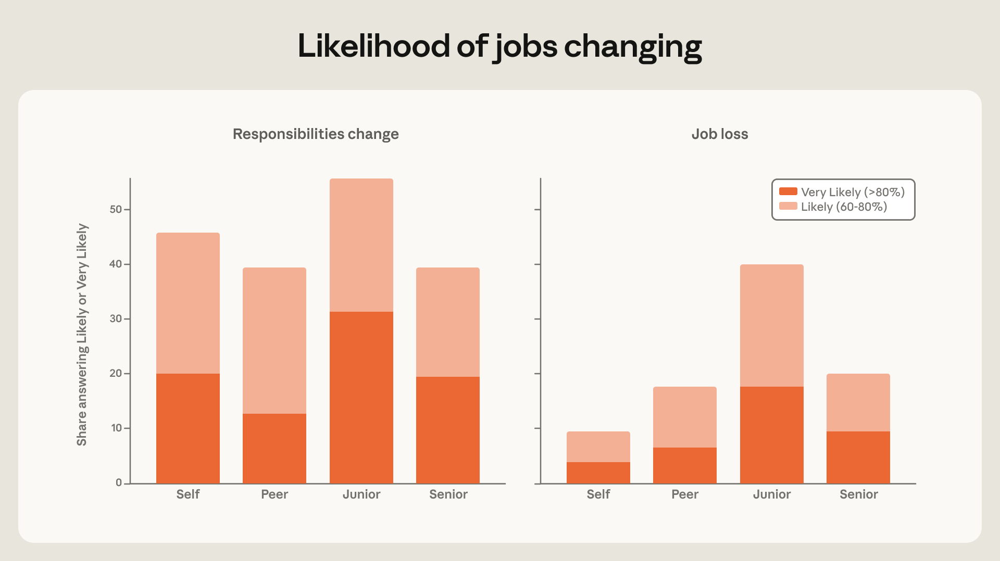
האם אנשים שמשתמשים ב-Claude בדרכים אוטומטיות יותר גם מודאגים יותר מאובדן עבודה? אנו בוחנים מה אמרו אנשים על ההשפעה הצפויה של בינה מלאכותית בשנה הקרובה על שישה ממדים של עבודה: שכר, ביטחון תעסוקתי, היכולת למצוא משרה חדשה (ממדים כלכליים), וכן משמעות, אוטונומיה ואינטראקציה אנושית (ממדים פנימיים); ובוחנים כיצד ציפיות אלה משתנות בהתאם לשיעור השימוש האוטומטי ב-Claude.
בכל ששת הממדים, אנשים ששיעור הסשנים האוטומטיים שלהם גבוה יותר חשים אופטימיים יותר לגבי השפעת הבינה המלאכותית על תוצאות התעסוקה שלהם בשנה הבאה, בהשוואה למי שמשתמשים ב-Claude יותר ככלי להעצמה. ההשפעות הגדולות ביותר שראינו היו על הציפיות להשפעות חיוביות על השכר העתידי ועל היכולת למצוא משרה. 26
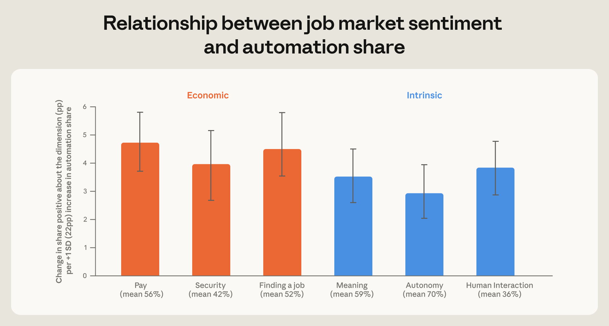
שאלה מתבקשת היא מדוע שימוש אוטומטי והלך רוח נעים יחד. ייתכן שהקשר הזה מוסבר באמצעות ברירה, כלומר שהאנשים הנלהבים ביותר מבינה מלאכותית הם גם המוכנים ביותר להעביר אליה משימות שלמות. איננו יכולים לשלול זאת לחלוטין, אך האומדנים האלה אינם משתנים באופן מהותי כאשר אנו מפקחים על הוותק של המשתמש ב-Claude.ai, שאפשר לראות בו מדד עקיף להתלהבות, משום שהוא מבחין בין מאמצים מוקדמים למאוחרים יותר.
אפשרות נוספת היא שאנשים המשתמשים בבינה מלאכותית בדרכים אוטומטיות יותר חווים כיום יותר מיתרונותיה. בהתאם לממצאים הקודמים שלנו, רוב גדול מהאנשים מדווחים על שיפורים בפרודוקטיביות במהירות, בהיקף ובאיכות עבודתם (86%, 82% ו-69%, בהתאמה), ואילו 27% מדווחים על שיפור בזכות חיסכון בעלויות של שירותים שאחרת היו נדרשים לרכוש.
נוסף על שיפורים משמעותיים בפרודוקטיביות, רוב האנשים מדווחים גם שהם לומדים יותר בעזרת בינה מלאכותית (68%) ומרגישים שבינה מלאכותית הפכה את כישוריהם לבעלי ערך רב יותר (57%). איור 3.7 מראה כיצד שתי התוצאות האלה משתנות בהתאם לשיעור הסשנים האוטומטיים. אנו רואים ששיעור האנשים המדווחים כי בינה מלאכותית מעלה את ערך השוק של כישוריהם עולה עם שיעור האוטומציה, ואילו שיעור המדווחים שהם לומדים יותר נותר יציב בקירוב.
חשש נפוץ בנוגע להאצלה הוא שהעברת משימות שלמות לבינה מלאכותית פירושה העברת החשיבה אליה, כך שהגידול בתפוקה בא על חשבון הלמידה ומלווה בניוון מיומנויות. איננו רואים כאן דפוס זה: מי שמאצילים יותר מדווחים על למידה באותו שיעור כמו כולם. עם זאת, אלה הן הערכות עצמיות, ומיומנויות יכולות להישחק גם כשהן נעשות בעלות ערך רב יותר וגם כשאדם מדווח שהוא לומד יותר, ולכן הנתונים אינם שוללים שחיקה במיומנויות.
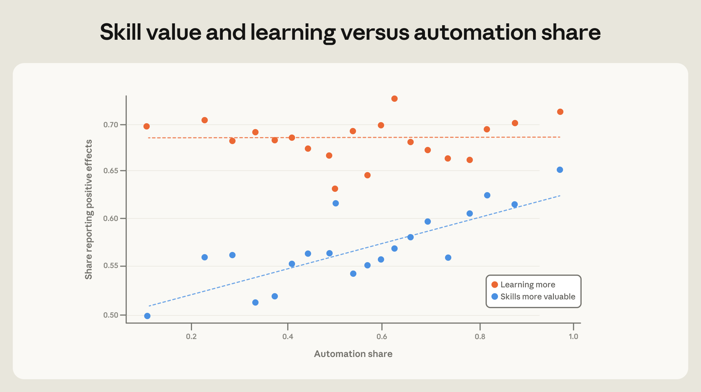
כיצד השימוש שונה בין מגדרים
עד כה בחנו כיצד דפוסי שימוש קשורים לציפיות ולהתנהגות. כעת אנו בוחנים מי משתמש ב-Claude בדרכים שונות. ההבדלים הבולטים ביותר הם לפי מגדר. נשים, המהוות רק 12% ממדגם המשיבים המקושר שלנו, משתמשות ב-Claude באופן שונה מגברים. גם לאחר שמביאים בחשבון הבדלים בין מקצועות, הסבירות שישתמשו ב-Claude לעבודה נמוכה במעט, שיעור הסשנים שלהן ב-Claude Code נמוך ב-0.24 סטיות תקן (6.3 נקודות אחוז), ושיעור האוטומציה שלהן נמוך ב-0.33 סטיות תקן (7.3 נקודות אחוז). במקום זאת, נשים נוטות להשתמש ב-Claude באופן איטרטיבי יותר, והן צוברות יותר זמן פעיל בצ׳אט מגברים, אות למעורבות שיתופית יותר. 27
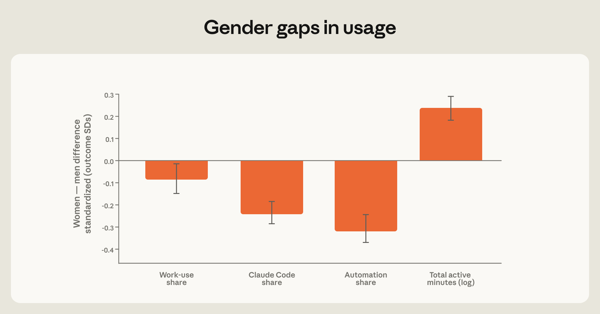
למה אנשים מקווים מכלכלה שעברה שינוי בידי בינה מלאכותית?
סקר Anthropic Economic Index מציף שילוב של חוויות והלכי רוח חיוביים ושליליים ביחס לבינה מלאכותית, אך אנו מסיימים את הסקר בנימה מלאת תקווה. השאלה הפתוחה האחרונה מבקשת מהמשיבים ״לחלום בגדול: כיצד אתם מקווים שתיראה בעוד עשר שנים כלכלה שעוצבה בידי בינה מלאכותית?״ העברנו כל תשובה לסקר דרך מסווג שתייג את התשובות לפי נושאים רלוונטיים. להלן אנו מציגים את חמשת הנושאים שצוינו בשכיחות הגבוהה ביותר. תיאורים נוספים של כל אחד מהם מופיעים בנספח.
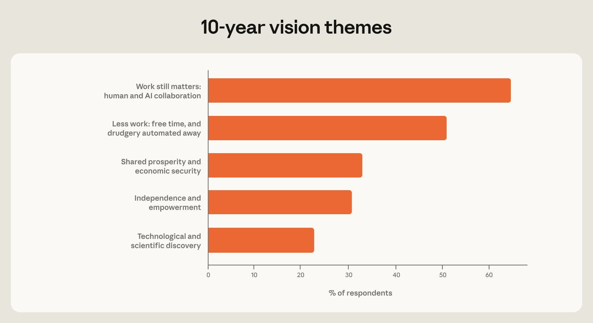
הנושא הנפוץ ביותר שהובע היה העצמת העבודה באמצעות בינה מלאכותית. יותר ממחצית מהמשיבים לסקר הביעו גרסה כלשהי של רצון לשתף פעולה עם בינה מלאכותית בעבודה הנתפסת כבעלת משמעות, רצון שהקריירה שלהם תמשיך להיות חשובה, ו/או תקווה שיצמחו ענפים חדשים וייצרו הזדמנויות תעסוקה חדשות. בה בעת, מעט יותר ממחצית מהמשיבים קיוו לאוטומציה באמצעות בינה מלאכותית, ובפרט של החלקים המייגעים במשרותיהם, כדי שיוכלו ליהנות מיותר זמן פנוי ומיותר מרחב למשמעות מחוץ לעבודה. הנושא השלישי בשכיחותו, שהובע בידי כשליש מהמשיבים לסקר, היה שגשוג משותף: התקווה שהתועלות הכלכליות מבינה מלאכותית יחולקו באופן נרחב.
דיון
בינה מלאכותית מתפשטת במהירות ברחבי הכלכלה, על פני מספר גדל והולך של ממשקים, עם פלטים שנעשים חכמים יותר ויותר. בממשקי צ׳אט מוקדמים יותר של בינה מלאכותית, השימוש היה פשוט ומוגבל לחלון הצ׳אט, ללא חיפוש באינטרנט, קריאות לכלים, תוצרים או אמצעים אחרים. כעת, מודלים של Claude יכולים לפעול באופן אוטונומי במשך שעות באמצעות Claude Code ו-Cowork. במקביל לשינוי בצורות האלה, גם בסיס המשתמשים משתנה. המאמצים המוקדמים היו טכניים מאוד. המשתמשים החדשים ביותר שלנו מיישמים את Claude על משימות שמזכות בשכר נמוך יותר בשוק העבודה.
בדוח זה נקטנו כמה צעדים לקראת מדידה אינפורמטיבית יותר. ראשית, התחלנו למדוד בתדירות גבוהה יותר ויותר, ולעבד נתונים בדגימות שעתיות. הדבר חושף כיצד המקצבים של חיי היומיום נחרטים ביומני השימוש שלנו ופותח נתיבים למחקר עתידי. שנית, התחלנו לתעד תוצרים, כלומר את הפלטים שאנשים לוקחים עמם מ-Claude. אלה הופכים את תפוקת העבודה של Claude לברורה יותר ומציגים כמה דפוסים אינטואיטיביים.
לבסוף, נתוני שימוש יכולים להכיל רק כמות מוגבלת של מידע. הסקר שלנו אפשר לנו, בפעם הראשונה, לשאול אנשים ישירות כיצד הם משתמשים בבינה מלאכותית ומה הם מרגישים כלפיה. מצאנו שהמשיבים לסקר משתמשים בבינה מלאכותית ליותר מכפי שאנו מייחסים לה: הם מדווחים שבינה מלאכותית יכולה לבצע שיעור גבוה יותר מעבודתם מכפי שמדד החשיפה הנצפה במקצוע שלהם היה מרמז. כאשר התבקשו לחזות את היכולות בשנה הבאה, יותר מ-35% חזו שבינה מלאכותית תוכל לבצע את רוב עבודתם.
סיווג מדויק של העבודה ש-Claude מבצע ימשיך להיות מטרה נעה. לדוגמה, ככל שיכולות הבינה המלאכותית גדלות, מערכות בינה מלאכותית עשויות לקיים יותר ויותר אינטראקציות וחילופי מידע זו עם זו, אולי בדרכים שאינן נהירות לבני אדם או למסווגים פשוטים. בסופו של דבר, השפעת Claude על הכלכלה תיראה במצרפים כלכליים כגון תעסוקה ופרודוקטיביות, לא פחות מאשר ביומני השימוש שלו. ובכל זאת, סביר שבינה מלאכותית תשפיע תחילה באזורים שבהם היא מבצעת את העבודה הרבה ביותר, ולכן הזרקור שיופנה אל דפוסי השימוש המשתנים ללא הרף יוסיף להיות דרך מרכזית להביא מידע לידיעת הציבור.